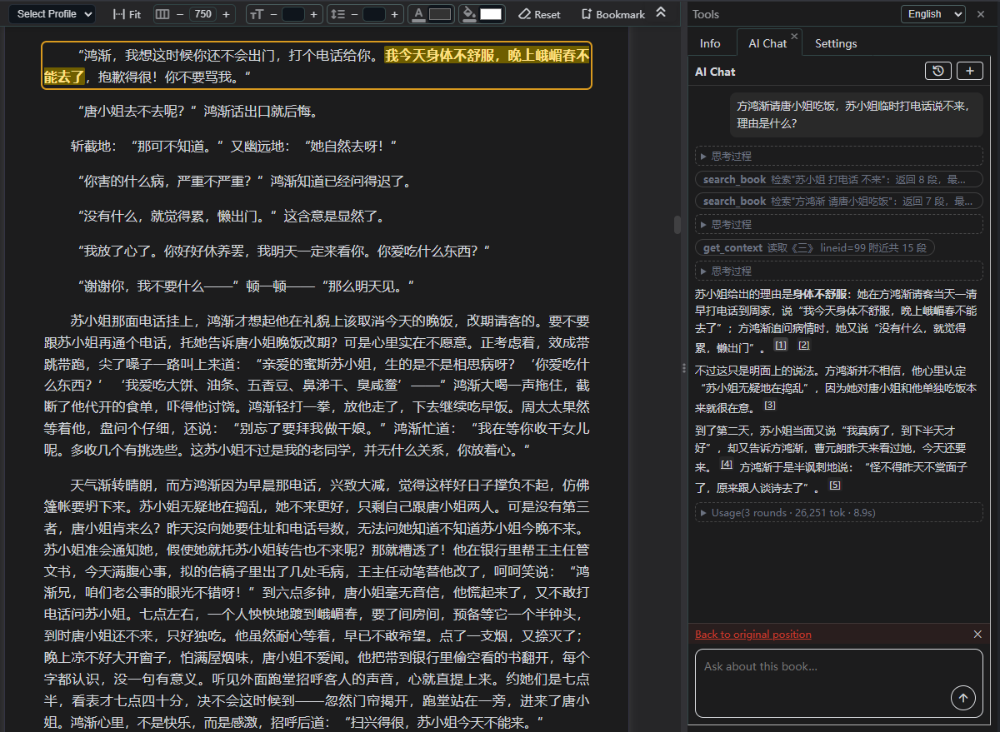

基于本书提问
AI 会先在当前这本书里找相关内容，再据此回答，而不是用通用知识泛泛而谈。
打开对话
- 打开一本书。
- 点工具栏的「AI 对话」，右侧打开对话面板。
- 在输入框里提问并发送。

适合问什么
- 总结：「这一章主要讲了什么？」
- 解释：「这里说的 X 是什么意思？」
- 定位：「书里第一次提到 Y 是在哪里？」
- 对比：「作者对 A 和 B 的看法有什么不同？」
- 追问：针对上一条回答继续问，不必重复背景。
回答里的依据
回答中带编号的角标就是引用。每个回答都会标明它的依据来自书里的哪一段，你可以点回去自己核对。
怎么用
- 在 AI 对话里提问，等待回答完成。
- 点击任意一个角标。
- 阅读器会跳到对应的章节与段落，并把引用位置标出来。
两种标记分别表示什么
| 标记 | 含义 |
|---|---|
| 黄色边框 | 回答引用的那一段。用来告诉你「依据在这里」。 |
| 黄色底色 | 答案里确实逐字使用了的原文句子。用来告诉你「具体是这几句话」。 |
为什么有时只有边框、没有黄底
如果 AI 是概括或改写了段落的意思，原文里就没有被完整使用的句子，此时只会标出整段。这说明引用的是这一段的含义，而不是某一句话。